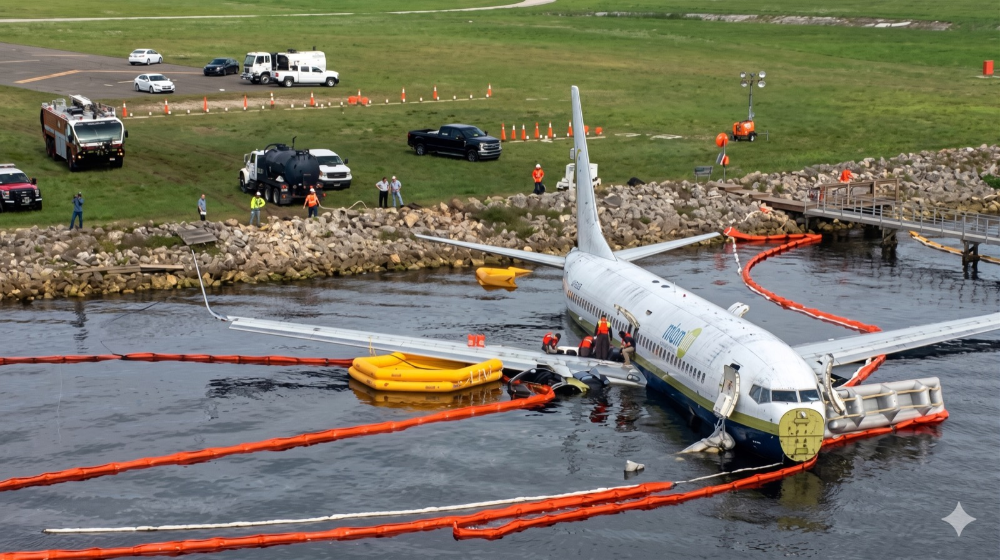

Study the scene, listen to a full Level 5 model answer, read the transcript, then test your comprehension with a 10-question quiz.

A complete Level 5 picture description: observation, deduction, safety reasoning, and a sample radio call.
In this photo, I can see a narrow-body aircraft, possibly a Boeing 737, partially submerged in water near the end of a runway. From the tire tracks leading from the runway to the water, it is clear that this must have been a runway excursion.
The aircraft appears to have overrun the runway and entered the water at relatively low speed. The fuselage looks mostly intact, and there are no obvious signs of major structural break-up. This may indicate that the impact forces were not extremely high. From a safety perspective, this is important because lower impact forces usually increase the chances of passenger survival.
The forward emergency exits are open, and the evacuation slides have been deployed. This suggests that the crew initiated an emergency evacuation after the aircraft came to a stop. One slide appears to be inflated, while the other one seems to be deflated. It could have been punctured during the evacuation, or it may not have inflated correctly.
There are several people standing on or near the right wing. They do not appear to be passengers or crew members, so they could have been accident investigators, airport officials, or emergency personnel. A yellow raft can be seen near the wing, so they may have used it to reach the aircraft from the shoreline.
Around the aircraft, there is an orange floating barrier. This was probably placed there to contain debris, fuel, oil, or hydraulic fluid. From an environmental safety perspective, this is a necessary measure because hazardous fluids could spread into the water and cause contamination.
In the background, I can see fire rescue vehicles, airport vehicles, and people wearing reflective clothing and hard hats. This means that the emergency services must have responded to the accident site. However, there is no clear sense of panic, so the photo was probably taken some time after the initial emergency.
There is also a floodlight in the upper right-hand corner of the photo. This may suggest that the accident occurred at night, or that the recovery operation continued into the night. The floodlight would help emergency crews and investigators work safely around the aircraft.
As for possible causes, there is usually no single reason for this type of accident. A possible contributing factor could have been poor braking action on a wet or contaminated runway. The aircraft could also have encountered wind shear, a tailwind, or strong crosswind during landing or rejected takeoff. These factors can increase stopping distance and reduce the safety margin.
Another possible factor could have been a malfunction of the braking system, speed brakes, or thrust reversers. In this photo, the engines are submerged, so it is difficult to say whether the thrust reversers were deployed. The speed brakes are not clearly deployed, but they may have been retracted after the aircraft stopped.
From a crew perspective, the first priority after the runway excursion would be to secure the aircraft, inform air traffic control, and start the evacuation if there was any risk of fire, smoke, fuel leakage, or sinking. The captain would need to advise air traffic control about the situation and report the number of souls on board.
A possible radio call could be: “Tower, November one two three, we have gone off the runway and entered the water. The aircraft is partially submerged. We have one hundred fifty souls on board. Request immediate fire rescue assistance.”
The flight crew would then run the evacuation checklist, shut down the engines, and make sure the aircraft was safe before passengers left the aircraft. The cabin crew would instruct passengers to release their seat belts, leave their baggage behind, and evacuate quickly.
From a safety perspective, passengers must move away from the aircraft as soon as possible because there may still be a risk of fire, fuel leakage, smoke, or structural failure. Taking baggage during an evacuation is extremely dangerous because it can slow down the evacuation and block other passengers.
For air traffic control, the priority would be to alert airport fire rescue, close the affected runway, stop departures, and instruct arriving aircraft to go around or divert if necessary. Good coordination between the pilots, cabin crew, air traffic control, and rescue services is essential in this type of emergency.
In my opinion, this situation shows how quickly a normal landing or takeoff can become a serious emergency. The main safety lesson is that runway condition, wind, braking performance, crew communication, and emergency preparedness are all critical. A well-coordinated evacuation and a fast emergency response can prevent injuries and save lives.